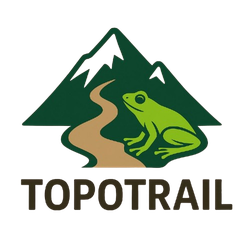

Planejamento de campo
O TopoTrail apoia a escolha preliminar de rotas, trilhas e acessos em terrenos naturais, especialmente quando a topografia influencia o deslocamento.

Plugin QGIS para planejamento preliminar de trilhas, acessos e corredores de deslocamento em áreas naturais, usando análise topográfica com DEM, declividade e curvaturas do relevo.
O TopoTrail apoia a escolha preliminar de rotas, trilhas e acessos em terrenos naturais, especialmente quando a topografia influencia o deslocamento.
O plugin transforma DEM, declividade e curvaturas em uma superfície de adequabilidade topográfica, destacando zonas mais favoráveis e áreas de maior dificuldade.
Os resultados funcionam como evidência geoespacial de apoio. Eles não substituem validação de campo nem análises legais, ambientais ou fundiárias.
O usuario informa DEM/MDE, raster de declividade, curvatura horizontal e curvatura vertical, todos com CRS definido.
Define limites de altitude, declividade maxima, pesos dos criterios, threshold, area minima e opcoes de rota.
O algoritmo valida grade, CRS e resolucao, alinha rasters quando necessario e calcula adequabilidade, risco relativo e custo de deslocamento.
Gera raster continuo de adequabilidade, raster de risco, zonas vetoriais, rota sugerida, corredor de acesso e log tecnico.
| Funcao | Descricao | Uso pratico |
|---|---|---|
| Adequabilidade topografica | Combina altitude, declividade e curvaturas por pesos definidos pelo usuario. | Identificar areas com relevo mais favoravel ao deslocamento. |
| Risco topografico relativo | Combina declividade e rugosidade/curvatura em uma camada complementar. | Visualizar areas potencialmente mais criticas ou exigentes. |
| Zonas potenciais | Converte o raster de adequabilidade em areas vetoriais, com filtro de area minima. | Apoiar mapas de contexto e selecao de trechos promissores. |
| Rota sugerida | Calcula caminho de menor custo entre origem e destino usando a superficie topografica. | Planejar acessos preliminares para campo. |
| Corredor de acesso | Gera uma faixa ao redor da rota sugerida. | Delimitar area de avaliacao em torno do caminho proposto. |
| Interface bilingue | HUD com alternancia PT-BR / ENG. | Facilitar uso local e revisao externa. |
Na interface, o TopoTrail respeita a paleta ativa do QGIS/Qt para funcionar bem em temas claro e escuro. Para materiais graficos, documentacao e apresentacoes, a paleta abaixo preserva a identidade visual do plugin e das camadas cartograficas.
#2F5334Uso: identidade principal, titulos e assinatura visual do TopoTrail.#6F8F5FUso: botoes principais, acoes positivas e destaque da interface.#FBF8EFUso: fundos claros, areas de leitura e materiais de apresentacao.#263526Uso: texto principal, labels e contraste em fundos claros.#FFB02EUso: preenchimento das zonas potenciais de trilha/acesso no mapa.#EC1C84Uso: linha da rota sugerida de menor custo topografico.#00B2D6Uso: preenchimento do corredor de acesso ao redor da rota.#B41D4BUso: classe maxima do raster de risco topografico relativo.#FF9A2EUso: classes intermediarias/altas de risco e pontos de atencao.#C8D7C3Uso: bordas, separadores, contornos suaves e estrutura da HUD.Esta imagem e uma representacao visual em HTML baseada na interface real do plugin. Uma captura real deve ser feita dentro do QGIS quando o plugin estiver aberto no ambiente de teste.
A HUD real e responsiva, possui rolagem horizontal quando necessario e usa cores derivadas do tema ativo do QGIS para preservar contraste.
| Versao | 0.5.1 |
|---|---|
| QGIS minimo | 3.22 |
| QGIS maximo declarado | 4.99 |
| Licenca | MIT |
| Repositorio | https://github.com/LuanCortesM/Topotrail |
| Download oficial | QGIS Python Plugins Repository |
| Dependencias esperadas | GDAL, NumPy, SciPy, Pandas, GeoPandas e Shapely no Python do QGIS. |
MACIEL, L. S. C. (2026). TopoTrail: a QGIS plugin for preliminary trail planning using digital elevation models (0.5.0). Zenodo. https://doi.org/10.5281/zenodo.20320495